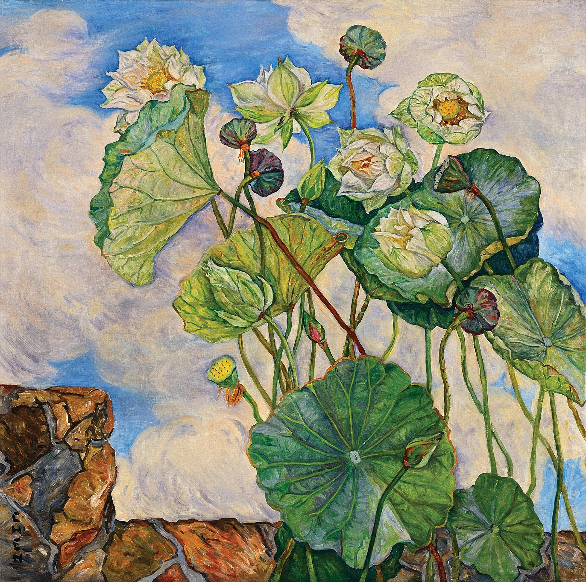
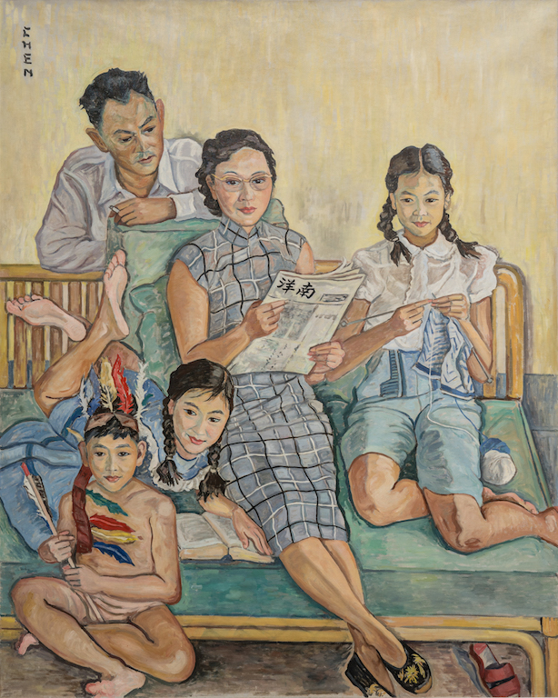

张荔英 Georgette Chen – 微风中的荷花 Lotus in a Breeze
文章目录
 图1. Georgette Chen, Lotus in a Breeze, c. 1970, Oil on canvas, 81 x 81 cm, National Gallery Singapore
Chen是一位传奇女子，出生于江南太湖边的小城南浔，父亲是国民党元老张静江，母亲是苏州大家闺秀姚惠。 幼年时随经商的父亲游历欧美，并在少年时居住巴黎，完成美术学业。原本她誓将自己献身于艺术，终身不嫁，怎知24岁芳华年岁她遇到一生挚爱陈友仁Eugene Chen。 在艰难说服（或者说没有说服）父母后，年龄相差31岁的他们在巴黎结连理，Georgette改随夫姓Chen，此后她的作品中都印记着这个姓。即使在爱人病逝后她改嫁他人，也坚持不更改此姓。
在战争年代，动荡与漂泊是常态，陈友仁夫妇从巴黎前往香港参加革命，不幸被日军逮捕并软禁在上海，直至陈友仁病逝。Chen离开伤心故地，只身下南洋，在她的**“塔希堤Tahiti”岛**平静生活直至逝世。 Chen并无儿女，在姐姐去世后领养照顾姐姐的孩子们，但她的后半生培育出众多南洋的艺术栋梁，美育树人之德，在新加坡艺术界传为美谈！
昨晚在网上看到Chen的荷花（图1），心心念念一夜。今晚九点回国的航班已定，虽然再安排新加坡国家美术馆会让行程紧张，但实在是希望能目睹荔英的荷花。 今天午饭后忍痛提前与诺分别，去美术馆一睹她的芳容。
那片荷，在夏日微风中，散发着徐徐清香。 墨绿、翠绿、雅绿、嫩绿，不同的绿相互叠加，形像成一片片荷叶；白色的荷花在阳光下泛着黄绿（图2），还有水汽散发着微醺的紫；金黄的花蕊、鲜亮的莲蓬衬托出曾经花期的绚烂。 整幅画从含苞待放的花骨朵，到芳华正茂的白荷，再到落花流水后的残荷，似乎像人的一生，有初生的懵懂，壮年的辉煌，还有暮年的秋实。 Chen的荷花之景并非实景中的某一片，而是池塘中从初夏到夏末的整段时光，在一池的荷花中看尽一生的历程，她懂得生活的真谛就是接受生活给予的辛酸与甜蜜，感受每一种味道！
今天下午，我在画前，不仅捕捉到那个夏天里美好的景观，也感受到荔英在生活里的坚强与温柔。
相比Chen在1962年所作的《荷花颂》（图3），我更爱1972年创作的《微风中的荷花》。两幅画的用色中，前者是与自然接近，后者与感悟相通。这也许是岁月的馈赠！ 《荷花颂》尺幅比较大，在2013年以 $9,160,000港币 被刘益谦拍到，如今收藏在龙美术馆西岸馆。（刘叔叔对中国艺术的贡献巨大，立个flag：2019年去龙美术馆参观！）
 图3. Georgette Chen, Lotus Symphony, 1962, Oil on canvas, 58.00 x 144.00 cm, LONG MUSEUM West Bund (Shanghai)
图3. Georgette Chen, Lotus Symphony, 1962, Oil on canvas, 58.00 x 144.00 cm, LONG MUSEUM West Bund (Shanghai)
Chen的艺术生涯因其人生的经历被划分为三个时期[2]：
- French period (1927-1933) 秋天的爱恋 Love in Autumn
- China-Hong Kong & Shanghai period (1934-1948) 冬季的阴暗 Dark Passage in Winter
- Penang-Singapore period (1949-1980) 无尽的夏日 Deathless Days in Summer
在法国期间，Chen多以写生风景为创作主题。 在中国时期，Chen经受了最多的苦难，我最爱这时期的自画像系列和爱人画像系列。那段日子，她与陈友仁被软禁在上海公寓，他政治仕途灰暗，她无法在天地中自由挥洒色彩。这时期的作品大多是她与他最艰难时期的写照：爱人陈友仁在她的笔下，眼神忧郁，眉头紧锁，从中年的满腔抱负到老年的郁郁不得志。 Chen的一幅幅作品刻画出陈友仁的故事，爱人如斯，夫复何求？
 图4. Georgette Chen, Portrait of Eugene Chen, 1940, Oil on Canvas
图4. Georgette Chen, Portrait of Eugene Chen, 1940, Oil on Canvas
图6. Georgette Chen, Bananas in a Basket, c.1953-1955, Oil on canvas, 55.2 x 38.4 cm, National Gallery Singapore
图7. Georgette Chen, Still Life with Tropical Fruits, 1967, oil on canvas, 54 x 64 cm
图8. Georgette Chen, Cattleya Orchid, 1961, oil on canvas, 55 x 46 cm
图9. Georgette Chen, Still Life with Rambutans, Mangosteens and Pineapple, c. 1960s, oil on canvas, 54 x 65 cm, Private Collection, Singapore
图10. Georgette Chen, Still Life with Cut Apple and Orange, c. 1928 - 1930, Oil on canvas, 26 x 34cm, Collection of National Heritage Board, Singapore（photo by Lan）
在美术馆逍遥一番后，从礼品店带回一幅Chen的作品拼图（图11），送给乐乐，希望她喜欢！
 图11. Georgette Chen, Family Portrait, 1954, 161.5 x 130.2 cm, Collection of National Heritage Board, Singapore
参考： [1] http://www.singaporepools.com.sg/ms/sweep/en/lotus-in-a-breeze.html [2] https://www.nationalgallery.sg/see-do/highlights/the-worlds-of-georgette-chen